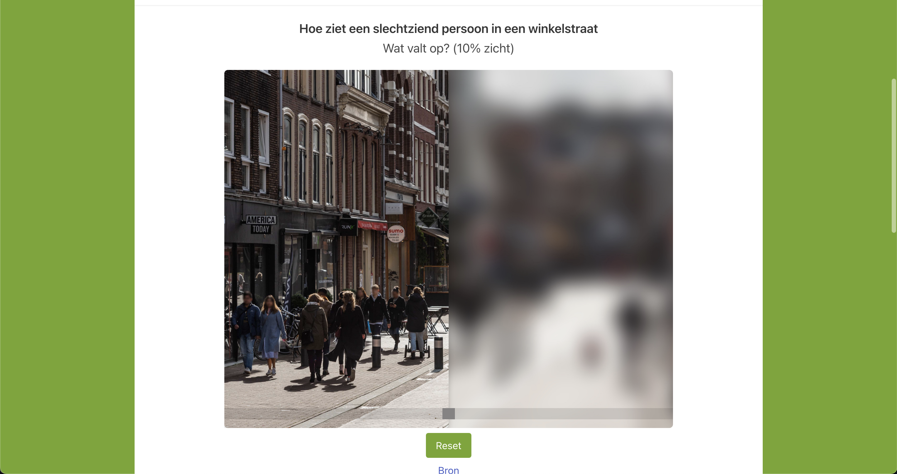

About me
Ik ben Viggo, 20 jaar oud en woon in Vlaardingen. In mijn vrije tijd houd ik mijzelf bezig met gamen, auto's of lekker wandelen. Op deze website zullen mijn schoolprojecten komen.
Skills
Hier toon ik welke skills ik heb verkregen met betrekking tot CMGT (Creative Media & Game Technologies)
Portfolio
De eerste opdracht bij CMGT was : bouw een robot die iemands leven verbeterd. Ik had zelf een rijdende zeilboot gemaakt, voor mijn teamgenoot. Deze was niet al te best. De vervolgopdracht hiervan was : maak met een groep een robot die iemand hun leven verbeterd. Toen kwamen wij uit op de Bedmaster, een afstandbediening met bijbehorende modules waarmee je apparaten of andere dingen in je slaapkamer kan bedienen op afstand.
Bedmaster Remote
Light Module
Button Module
Curtain Module
Onze tweede opdracht was het opzetten van een reserveringsysteem voor een opdrachtgever en gebruik maken van Php. Hier heb ik geleerd hoe ik een database opzet en vanuit een website informatie naar die database kan brengen en ophalen.
De derde opdracht bestaat uit het maken van een website waarvan een teamgenoot elke één pagina heeft. Het onderwerp van deze site gaat over accesibility.
Onze groep had de doelgroep : Slechtziende - Winkelen. Zo maken wij een website met informatie voor degene die met slechtziende te maken hebben / gaan hebben.
